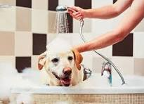
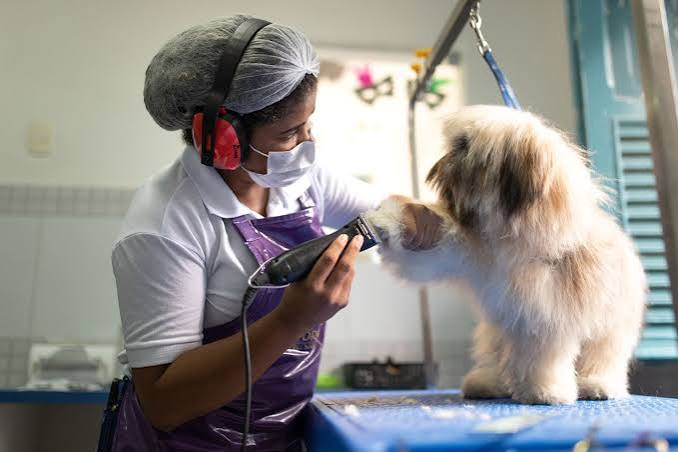
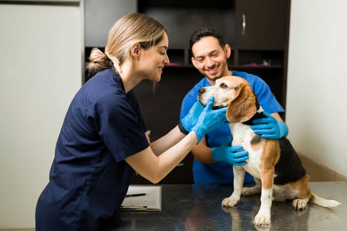
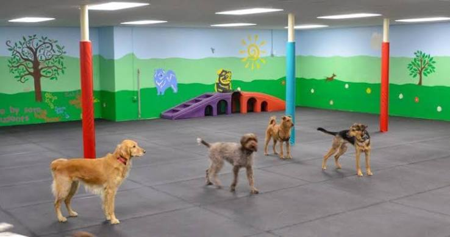
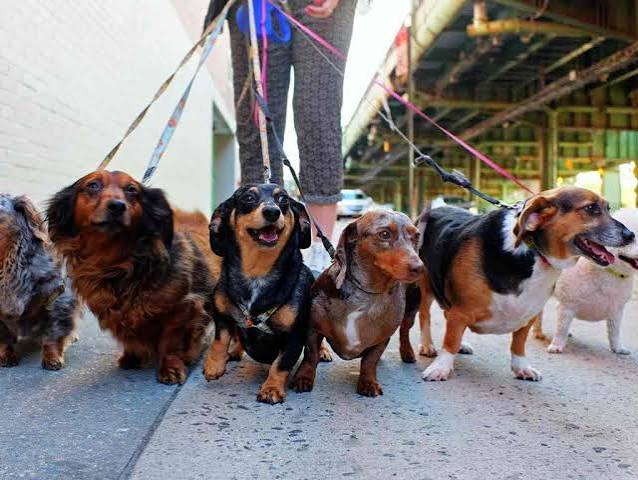
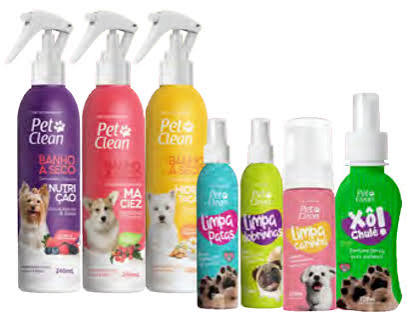

No Amor de Pet, oferecemos diversos serviços para cuidar da saúde, higiene e bem-estar do seu animal de estimação.

Oferecemos banho completo para deixar seu pet limpo, cheiroso e confortável, sempre utilizando produtos adequados para os animais.

A tosa é realizada com cuidado e atenção, ajudando a manter os pelos do seu pet bonitos, limpos e bem cuidados.

Contamos com atendimento veterinário para acompanhar a saúde dos pets e oferecer orientações importantes aos seus tutores.

Oferecemos um espaço confortável e seguro para seu pet ficar hospedado quando você precisar viajar ou se ausentar.

Os passeios ajudam os animais a se exercitarem, gastarem energia e terem momentos de diversão e socialização.

Também oferecemos produtos para o dia a dia dos animais, como brinquedos, acessórios e itens de higiene.